K-th Symbol in Grammar - Solution
Approach 1: Binary Tree Traversal
Intuition
Let's approach this problem as a binary tree challenge. We'll start with a single node, create two new child nodes
for each node in the current row, move to the next row, and repeat the process of creating new child nodes until we
have nnn rows in our tree. Finally, we return the kthk^{th}kth
nodes in the nthn^{th}nth
row.
The tree we will generate is a Perfect Binary Tree with all levels completely filled.
Note: The number of nodes in the ithi^{th}ith
row of a perfect binary tree is given by: 2(i−1)2^{(i - 1)}2(i−1),
where i=1,2,3,...i = 1, 2, 3,...i=1,2,3,...
If the current node is 000, its left child will be 000 and the right child will be 111.
Otherwise, if the current node is 111, its
left child will be 111 and the right child will be 000.
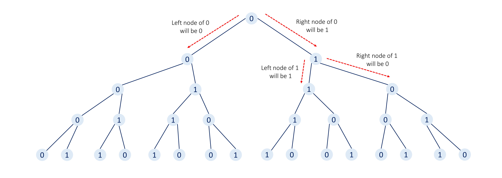
After generating the binary tree a naive way to reach the kthk^{th}kth
node of nthn^{th}nth
row will be to traverse all rows (levels) of the tree one by one by keeping track of the current (row, nodeIndex)
position. However, this approach will be sub-optimal as it would require iterating over all nodes in our tree and
the number of nodes will grow exponentially with each row.
Instead, we can try to perform a binary search-like algorithm where we discard the left or right half of the sub-tree
based on the condition where the final target node must be present. Provided this hint, we recommend you stop here
and try thinking a bit about how this method will work here.
The pre-requisite here will be that you must have a good understanding of how searching in a binary search tree
works.
This approach might not be intuitive to everyone, so let's proceed gradually using an example.
Consider the case where we need to find the 21st21^{st}21st
node in 6th6^{th}6th
row.
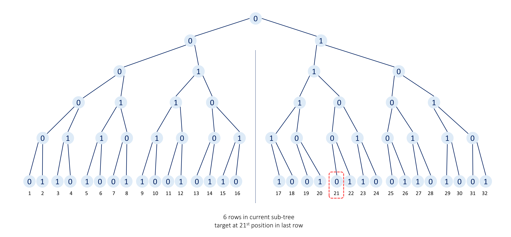
The number of nodes in the 6th6^{th}6th
row will be 26−1=25=322^{6 - 1} = 2^5 = 3226−1=25=32.
Therefore, the 21st21^{st}21st
node will be present in the right half of the last row in our current binary tree.
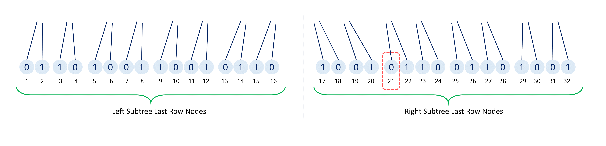
Hence, we can be certain that our target node is not present in the left sub-tree of the current root node. As a
result, we can discard the whole left sub-tree.
This simplifies our problem to finding the 21−1621 - 1621−16
(current position - half skipped nodes) =5th= 5^{th}=5th
node in the last row of the sub-tree of 555 rows.
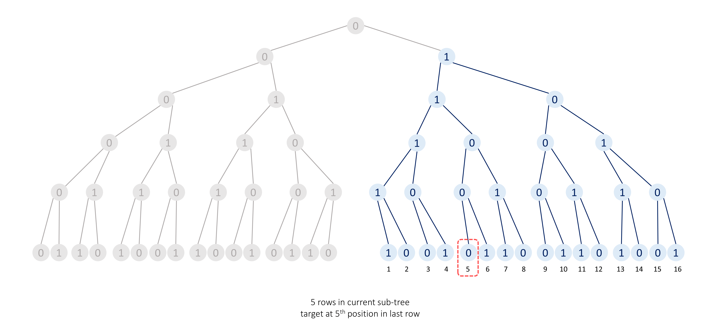
Within this subtree of 555 rows, we have to find the 5th5^{th}5th
node in the 5th5^{th}5th
row.
The number of nodes in the 5th5^{th}5th
row is given by 25−1=24=162^{5 - 1} = 2^4 = 1625−1=24=16.
Therefore, the 5th5^{th}5th
node will be present in the left sub-tree and we can discard the right sub-tree, and this time the position of the
target node will remain unchanged.
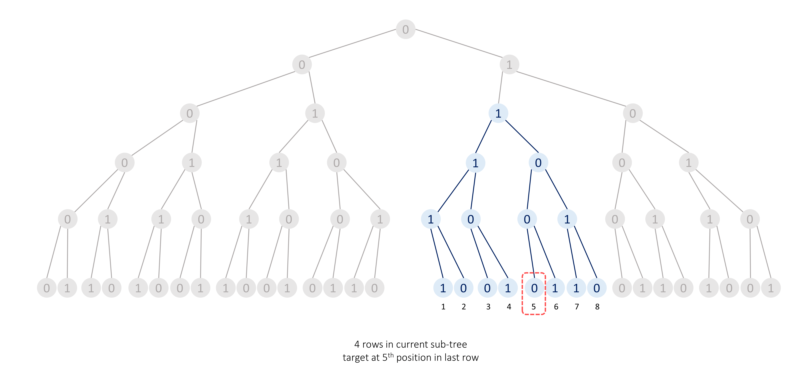
Within the subtree of 444 rows, we have to find the 5th5^{th}5th
node in the 4th4^{th}4th
row.
The number of nodes in the 4th4^{th}4th
row will be 24−1=23=82^{4 - 1} = 2^3 = 824−1=23=8.
Thus, the 5th5^{th}5th
node will be present in the right sub-tree and we can discard the left sub-tree.
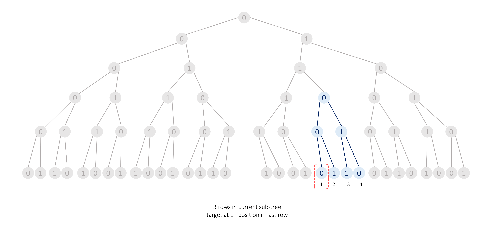
Within this subtree of 333 rows, we have to find the 1st1^{st}1st
node in the 3rd3^{rd}3rd
row.
The number of nodes in the 3rd3^{rd}3rd
row will be 23−1=22=42^{3 - 1} = 2^2 = 423−1=22=4.
Therefore, the 1st1^{st}1st
node will be present in the left sub-tree and we can discard the right sub-tree.
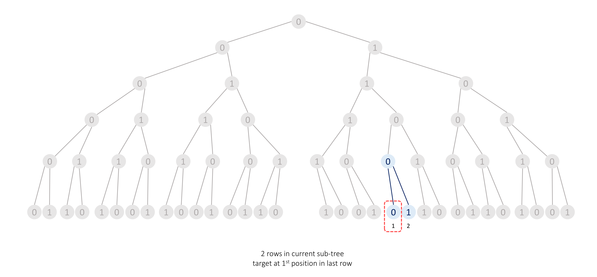
Within this subtree of 222 rows, we have to find the 1st1^{st}1st
node in the 2nd2^{nd}2nd
row.
The number of nodes in the 2nd2^{nd}2nd
row will be 22−1=21=22^{2 - 1} = 2^1 = 222−1=21=2.
Hence, the 1st1^{st}1st
node will be present in the left sub-tree and we can discard the right sub-tree.
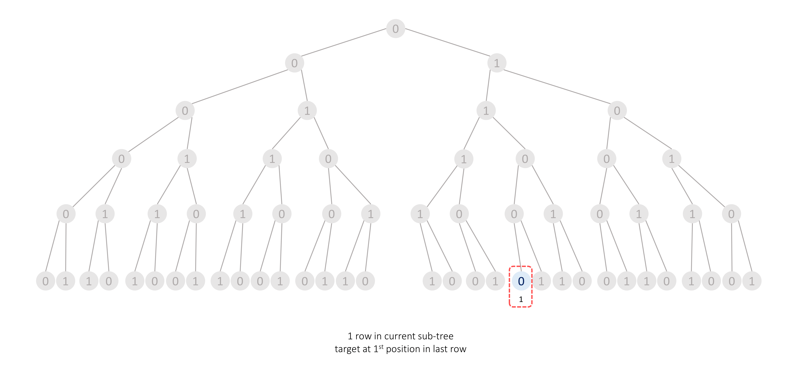
Now, in this subtree of 111 row, we have to find the 1st1^{st}1st
node in the 1st1^{st}1st
row. Since this row consists of only one node, the root node will be our target node.
As shown in the picture above, we can simplify this problem to a recursive binary tree challenge, where we
traverse down to the root node of the appropriate sub-tree until we reach the target node.
Algorithm
-
Create a method depthFirstSearch which takes n number of rows in the current tree,
k target node position in the last row, and rootVal current tree's root's value as
parameters:
-
If n is 1, then we will have a single node in our tree and this node is our
target node. So, we return its value rootVal.
-
Find the number of nodes in the last row of the current tree, totalNodes, 2(n−1)2^{(n - 1)}2(n−1).
-
If the current target node k lies in the left half of the last row of the current
subtree (i.e. k <= totalNodes / 2), we will move to the left sub-tree.
If the current node's value rootVal is 0 then the next node's value will
be 0, otherwise, the next node's value will be 1.
Return depthFirstSearch(n - 1, k, nextRootVal).
-
Otherwise, if the current target node k lies in the right half of the last row of the
current subtree (i.e. k > totalNodes / 2), we will move to the right sub-tree.
If the current node's value rootVal is 0 then the next node's value will
be 1, otherwise, the next node's value will be 0.
Additionally, the target's position will change to (k - (totalNodes / 2)).
Return depthFirstSearch(n - 1, newPosition, nextRootVal).
-
We return the result returned by calling depthFirstSearch(n, k, 0) with the number of rows as
n, target node position k, and root node's value 0.
Implementation
Java
class Solution {
public int depthFirstSearch(int n, int k, int rootVal) {
if (n == 1) {
return rootVal;
}
int totalNodes = (int) Math.pow(2, n - 1);
// Target node will be present in the right half sub-tree of the current root node.
if (k > (totalNodes / 2)) {
int nextRootVal = (rootVal == 0) ? 1 : 0;
return depthFirstSearch(n - 1, k - (totalNodes / 2), nextRootVal);
}
// Otherwise, the target node is in the left sub-tree of the current root node.
else {
int nextRootVal = (rootVal == 0) ? 0 : 1;
return depthFirstSearch(n - 1, k, nextRootVal);
}
}
public int kthGrammar(int n, int k) {
return depthFirstSearch(n, k, 0);
}
}
C++
class Solution {
public:
int depthFirstSearch(int n, int k, int rootVal) {
if (n == 1) {
return rootVal;
}
int totalNodes = pow(2, n - 1);
// Target node will be present in the right half sub-tree of the current root node.
if (k > (totalNodes / 2)) {
int nextRootVal = (rootVal == 0) ? 1 : 0;
return depthFirstSearch(n - 1, k - (totalNodes / 2), nextRootVal);
}
// Otherwise, the target node is in the left sub-tree of the current root node.
else {
int nextRootVal = (rootVal == 0) ? 0 : 1;
return depthFirstSearch(n - 1, k, nextRootVal);
}
}
int kthGrammar(int n, int k) {
return depthFirstSearch(n, k, 0);
}
};
Python3
class Solution:
def depthFirstSearch(self, n: int, k: int, rootVal: int) -> int:
if n == 1:
return rootVal
totalNodes = 2 ** (n - 1)
# Target node will be present in the right half sub-tree of the current root node.
if k > (totalNodes / 2):
nextRootVal = 1 if rootVal == 0 else 0
return self.depthFirstSearch(n - 1, k - (totalNodes / 2), nextRootVal)
# Otherwise, the target node is in the left sub-tree of the current root node.
else:
nextRootVal = 0 if rootVal == 0 else 1
return self.depthFirstSearch(n - 1, k, nextRootVal)
def kthGrammar(self, n: int, k: int) -> int:
return self.depthFirstSearch(n, k, 0)
Complexity Analysis
Approach 2: Normal Recursion
Intuition
Note: The previous approach will be sufficient during a real interview setting as these next
approaches are not intuitive enough to think of them during the limited time availability. So don't get
disheartened if these approaches seem hard to you. But it's recommended to read these approaches too, to have a
new perspective to look at the same problem.
First of all, after generating a few rows using the steps given in the problem description, we can observe two
patterns:
- The previous row is used as the prefix of the next row.
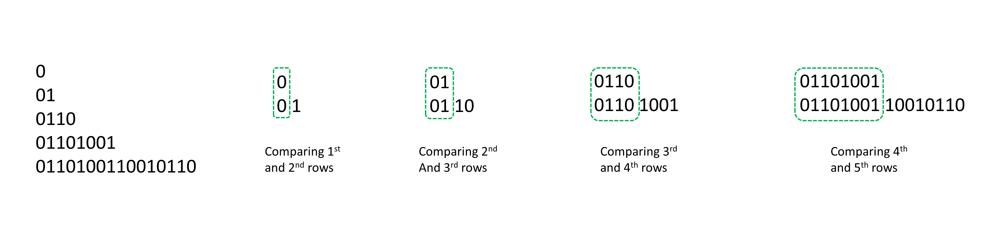
- If we divide any row into two equal halves then the symbol at each position will be opposite of each other in
both halves (i.e. if we have a
0 in the left half at index i, then the right half will
have a 1 at index i, and vice versa).
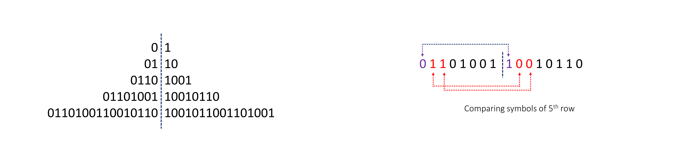
Now, these two points might seem very unintuitive to read at first, but we highly recommend you write down some
examples and try to reach these observations on your own.
Otherwise, click here to expand the explanation
Let's write down 6 rows.

-
The previous row will always be present as the prefix of the next row.
We start with a 0 which generates 01. We can see that the first symbol of the
second row is the same as the first row. It means, whatever the first row has generated will also be
generated by the first symbol of the second row.
Thus, the second row and the prefix of the third row will be the same as they both are generated from
the same symbols.
Again, let's consider one more row. The second row is 01 which generated 0110
as the third row. Again the 0110 will be used as a prefix in the fourth row because the
second row was 01 which generated 0110 and this third row also has
01 as the first two symbols (as we previously saw the second row will be used as a prefix
in the third row) which will again generate 0110. Thus, the third row and the prefix of the
fourth row will be the same.
Conclusion: Prefix in (i−1)th(i - 1)^{th}(i−1)th
and (i−2)th(i - 2)^{th}(i−2)th
rows are the same, these same symbols will generate the same symbols for the next respective rows, so,
the prefix of ithi^{th}ith
row will always be the same as (i−1)th(i - 1)^{th}(i−1)th
row.

-
If we divide any row into two equal halves then the symbol at each position will be opposite of
each other in both halves.
It's given that 0 generates 01 and 1 generates 10,
meaning, both symbols are opposite and generate the next row which contains opposite symbols at the same
positions. So we start with a 0, it generates 01 which when broken into two
halves have opposite symbols.
The next row generated by the left half of 2nd2^{nd}2nd
row 0 will be 01 and by the right half of 2nd2^{nd}2nd
row 1 will be 10, Thus, the 3rd3^{rd}3rd
row 01 10 when broken into two halves will also contain opposite symbols at same positions.
Additionally, each symbol of these two halves of 3rd3^{rd}3rd
row will generate the next row with opposite symbols at the same positions, and this pattern will
continue.
Conclusion: The first half symbols in ithi^{th}ith
will be opposite of the respective next half symbols at the same positions.

Note: To flip (find the opposite of) a symbol XXX,
where, X∈(0,1)X \in (0, 1)X∈(0,1), we can perform X′=1−XX' = 1 - XX′=1−X.
If X=0X = 0X=0, X′=1X' = 1X′=1, and if X=1X = 1X=1, X′=0X' = 0X′=0,
Now, suppose we want to find the 21st21^{st}21st
symbol of the 6th6^{th}6th
row.
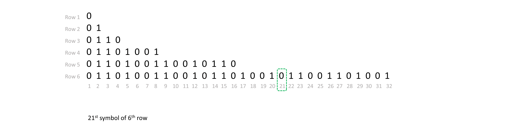
The number of nodes in the 6th6^{th}6th
row will be 26−1=25=322^{6 - 1} = 2^5 = 3226−1=25=32.
As we discussed the symbols of the first half of any row are opposite of the second half.
⟹ \implies⟹
21st21^{st}21st
symbol of the 6th6^{th}6th
row will be equal to (1−5th(1 - 5^{th}(1−5th
symbol of the 6th6^{th}6th
row ))).
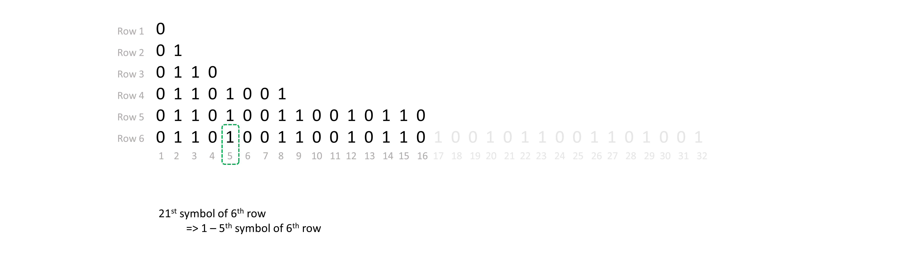
As the prefix of 6th6^{th}6th
row will be the same as the 5th5^{th}5th
row.
Hence, 5th5^{th}5th
symbol of the 6th6^{th}6th
row will be equal to 5th5^{th}5th
symbol of the 5th5^{th}5th
row.
⟹ \implies⟹
21st21^{st}21st
symbol of the 6th6^{th}6th
row will be equal to (1−5th(1 - 5^{th}(1−5th
symbol of the 5th5^{th}5th
row ))).
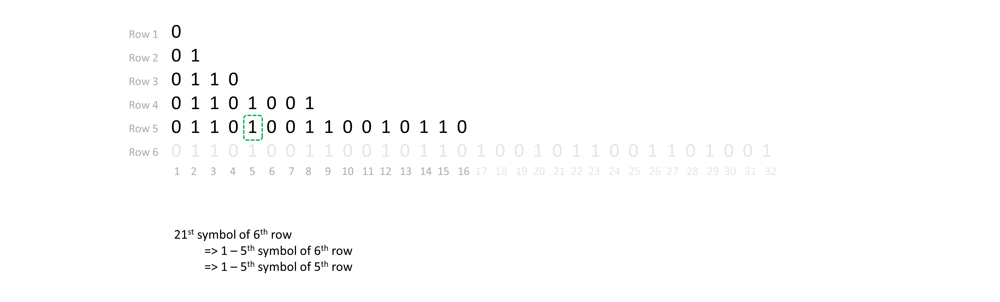
Similarly, the prefix of 5th5^{th}5th
row will be the same as the 4th4^{th}4th
row.
Therefore, 5st5^{st}5st
symbol of the 5th5^{th}5th
row will be equal to 5th5^{th}5th
symbol of the 4th4^{th}4th
row.
⟹ \implies⟹
21st21^{st}21st
symbol of the 6th6^{th}6th
row will be equal to (1−5th(1 - 5^{th}(1−5th
symbol of the 4th4^{th}4th
row ))).
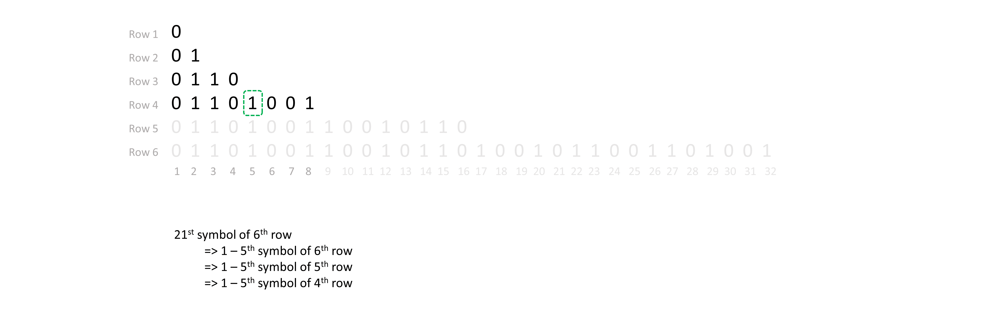
The number of nodes in the 4th4^{th}4th
row will be 24−1=23=82^{4 - 1} = 2^3 = 824−1=23=8.
As the symbols of the first half of any row are opposite of the second half.
So, 5th5^{th}5th
symbol of the 4th4^{th}4th
row will be equal to (1−1st(1 - 1^{st}(1−1st
symbol of the 4th4^{th}4th
row ))).
⟹ \implies⟹
21st21^{st}21st
symbol of the 6th6^{th}6th
row will be equal to (1−(1−1st(1 - (1 - 1^{st}(1−(1−1st
symbol of the 4th4^{th}4th
row )))))).
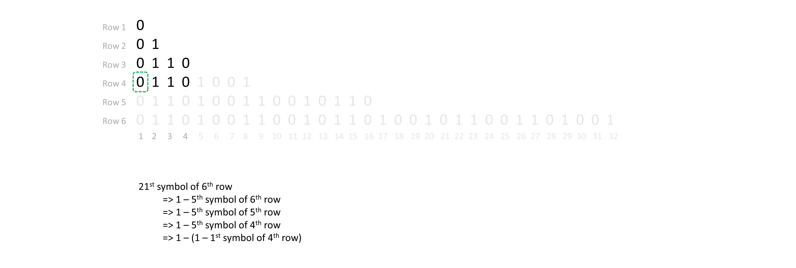
As the prefix of the 4th4^{th}4th
row will be the same as the 3th3^{th}3th
row.
So, 1st1^{st}1st
symbol of the 4th4^{th}4th
row will be equal to 1st1^{st}1st
symbol of the 3th3^{th}3th
row.
⟹ \implies⟹
21st21^{st}21st
symbol of the 6th6^{th}6th
row will be equal to (1−(1−1st(1 - (1 - 1^{st}(1−(1−1st
symbol of the 3th3^{th}3th
row )))))).
Similarly, the prefix of the 3th3^{th}3th
row will be the same as the 2nd2^{nd}2nd
row.
So, 1st1^{st}1st
symbol of the 3th3^{th}3th
row will be equal to 1st1^{st}1st
symbol of the 2nd2^{nd}2nd
row.
⟹ \implies⟹
21st21^{st}21st
symbol of the 6th6^{th}6th
row will be equal to (1−(1−1st(1 - (1 - 1^{st}(1−(1−1st
symbol of the 2nd2^{nd}2nd
row )))))).
Similarly, the prefix of the 2nd2^{nd}2nd
row will be the same as the 1st1^{st}1st
row.
So, 1st1^{st}1st
symbol of the 2nd2^{nd}2nd
row will be equal to 1st1^{st}1st
symbol of the 1st1^{st}1st
row.
⟹ \implies⟹
21st21^{st}21st
symbol of the 6th6^{th}6th
row will be equal to (1−(1−1st(1 - (1 - 1^{st}(1−(1−1st
symbol of the 1st1^{st}1st
row )))))).
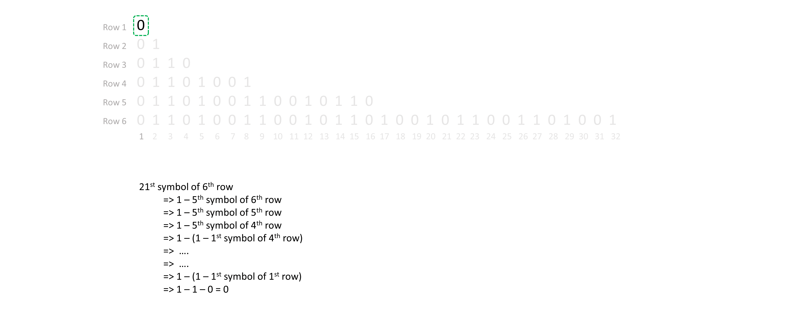
And, as we know 1st1^{st}1st
symbol of the 1st1^{st}1st
row is 0.
Thus, the 21st21^{st}21st
symbol of the 6th6^{th}6th
row will be equal to 1−(1−(0))=01 - (1 - (0)) = 01−(1−(0))=0.
With each step, we are converting our bigger problem into a similar smaller sub-problem.
So, here we can write a recursive approach, where our current problem is to find the symbol at a given position (k)(k)(k) in a given row (n)(n)(n).
If the current position lies in the right half of the current row then we know this symbol will be opposite of the
symbol present in the left half at the same position, and recursively we will find what is the symbol at
this new position in the same row.
And, if the current symbol lies in the left half then this symbol will be the same as the symbol in the previous row
at the same position, and recursively we will find what is the symbol at this position in the previous
row.
We will write a method recursion(n, k) which takes current row n, and the position of the
symbol in current row k as parameters:
-
The recursive step will be:
- If
k lies in the right half of the current row. Then we return 1 - recursion(n, k -
halfElements).
- Otherwise, we return
recursion(n - 1, k).
if k > halfElements:
return 1 - recursion(n, k - halfElements)
else:
return recursion(n - 1, k)
-
The base case to stop recursive calls will be a condition we can evaluate the result without any computation,
i.e. we know if n == 1 it will only have one symbol 0 which will be our result.
Thus, this condition will be our base case.
Algorithm
-
Create a method recursion() which takes n, current row number, k, and
target position as parameters:
-
If n is 1, then we can return 0 as the first row will have
only one symbol.
-
Find the number of symbols in the current row, totalElements, 2(n−1)2^{(n - 1)}2(n−1),
and halfElements = totalElements / 2.
-
If the current target position k lies in the right half of the current row (i.e. k
> halfElements), then, we switch to the current row's respective left half position
symbol, (i.e. at position k - halfElements).
Thus, we return, 1 - recursion(n, k - halfElements).
-
If the current target position k lies in the left half of the current row (i.e. k
<= halfElements), then, we switch to the previous row's respective same position symbol,
(i.e. present in the row n - 1 at position k).
Thus, we return, recursion(n - 1, k).
-
We return the result returned by calling recursion(n, k) with the current row as n,
and target symbol position k.
Implementation
Java
class Solution {
public int recursion(int n, int k) {
// First row will only have one symbol '0'.
if (n == 1) {
return 0;
}
int totalElements = (int) Math.pow(2, (n - 1));
int halfElements = totalElements / 2;
// If the target is present in the right half, we switch to the respective left half symbol.
if (k > halfElements) {
return 1 - recursion(n, k - halfElements);
}
// Otherwise, we switch to the previous row.
return recursion(n - 1, k);
}
public int kthGrammar(int n, int k) {
return recursion(n, k);
}
}
C++
class Solution {
public:
int recursion(int n, int k) {
// First row will only have one symbol '0'.
if (n == 1) {
return 0;
}
int totalElements = pow(2, (n - 1));
int halfElements = totalElements / 2;
// If the target is present in the right half, we switch to the respective left half symbol.
if (k > halfElements) {
return 1 - kthGrammar(n, k - halfElements);
}
// Otherwise, we switch to the previous row.
return recursion(n - 1, k);
}
int kthGrammar(int n, int k) {
return recursion(n, k);
}
};
Python3
class Solution:
def recursion(self, n: int, k: int) -> int:
# First row will only have one symbol '0'.
if n == 1:
return 0
total_elements = 2 ** (n - 1)
half_elements = total_elements // 2
# If the target is present in the right half, we switch to the respective left half symbol.
if k > half_elements:
return 1 - self.recursion(n, k - half_elements)
# Otherwise, we switch to the previous row.
return self.recursion(n - 1, k)
def kthGrammar(self, n: int, k: int) -> int:
return self.recursion(n, k)
Complexity Analysis
Approach 3: Recursion to Iteration
Intuition
The previous recursive can be optimized to an iterative approach to eliminate the use of the recursion stack.
Let's explore finding the 21st21^{st}21st
symbol of the 6th6^{th}6th
row.
We can follow the same process of the previous approach but in an iterative manner.
In the previous approach, we started with the first row's symbol 0 and flipped it as we switched it from
left to right half positions, until we reached the target position.
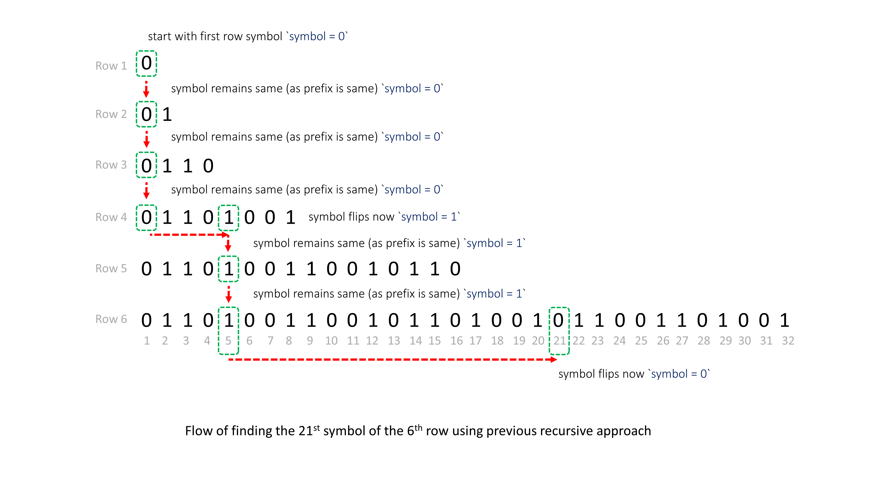
If we try to go from top to down then it will be difficult to conclude at which step the current symbol needs to be
flipped.
However, if we go from the bottom up, we can identify the flips that will be done when the current position exceeds
half the count of the symbols of the current row.
Let's assume the 21st21^{st}21st
symbol of the 6th6^{th}6th
row is, symbol = X.
We follow the same process, and if at the end symbol changes to 0, it means that we
started with the correct 21st21^{st}21st
symbol of the 6th6^{th}6th
row, X, otherwise, the correct symbol will be 1 - X.
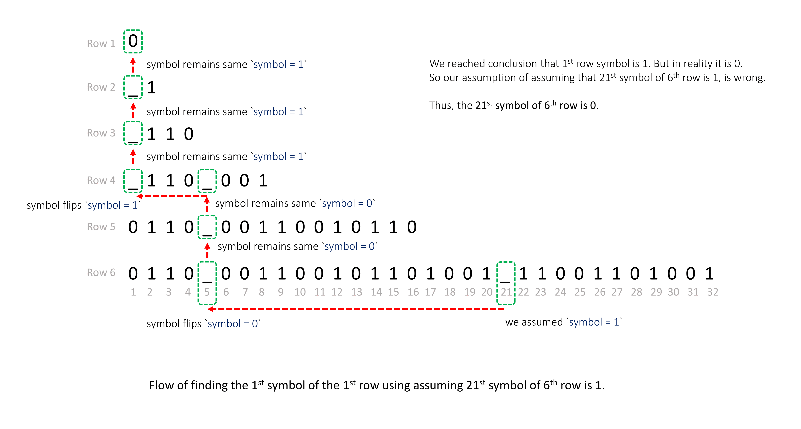
Algorithm
-
If n is 1 we can directly return 0.
-
Otherwise, we assume that the target symbol is 1, and iterate on all rows currRow
from n to 2.
-
For each row currRow, find the number of symbols in the current row, totalElements,
2(currRow−1)2^{(currRow - 1)}2(currRow−1),
and halfElements = totalElements / 2. If k lies in the right half of the current
row (i.e. k > halfElements), switch to the current row's respective left half position
symbol.
Thus, flipping symbol = 1 - symbol and changing position k = k - halfElements.
-
We will stop when the current row will become 1. We check if the symbol is
0, which means that our assumption that the target symbol is 1 is correct,
otherwise, the target symbol is 0.
Implementation
Java
class Solution {
public int kthGrammar(int n, int k) {
if (n == 1) {
return 0;
}
// We assume the symbol at the target position is '1'.
int symbol = 1;
for (int currRow = n; currRow > 1; --currRow) {
int totalElements = (int) Math.pow(2, (currRow - 1));
int halfElements = totalElements / 2;
// If 'k' lies in the right half symbol, then we flip over to the respective left half symbol.
if (k > halfElements) {
// Flip the symbol.
symbol = 1 - symbol;
// Change the position after flipping.
k -= halfElements;
}
}
// We reached the 1st row; if the symbol is not '0', we started with the wrong symbol.
if (symbol != 0) {
// Thus, the start symbol was '0', not '1'.
return 0;
}
// The start symbol was indeed what we started with, a '1'.
return 1;
}
}
C++
class Solution {
public:
int kthGrammar(int n, int k) {
if (n == 1) {
return 0;
}
// We assume the symbol at the target position is '1'.
int symbol = 1;
for (int currRow = n; currRow > 1; --currRow) {
int totalElements = pow(2, (currRow - 1));
int halfElements = totalElements / 2;
// If 'k' lies in the right half symbol, then we flip over to the respective left half symbol.
if (k > halfElements) {
// Flip the symbol.
symbol = 1 - symbol;
// Change the position after flipping.
k -= halfElements;
}
}
// We reached the 1st row; if the symbol is not '0', we started with the wrong symbol.
if (symbol != 0) {
// Thus, the start symbol was '0' not '1'.
return 0;
}
// Start symbol was indeed what we started with, a '1'.
return 1;
}
};
Python3
class Solution:
def kthGrammar(self, n: int, k: int) -> int:
if n == 1:
return 0
# We assume the symbol at the target position is '1'.
symbol = 1
for curr_row in range(n, 1, -1):
total_elements = 2 ** (curr_row - 1)
half_elements = total_elements // 2
# If 'k' lies in the right half symbol, then we flip over to the respective left half symbol.
if k > half_elements:
# Flip the symbol.
symbol = 1 - symbol
# Change the position after flipping.
k -= half_elements
# We reached the 1st row; if the symbol is not '0', we started with the wrong symbol.
if symbol != 0:
# Thus, the start symbol was '0', not '1'.
return 0
# The start symbol was indeed what we started with, a '1'.
return 1
Complexity Analysis
Approach 4: Math
Intuition
Note: This approach is highly unintuitive, and it is completely fine to skip it. We list it here
for completeness and to offer you an alternative perspective on how to approach the same problem.
After reviewing the previous approaches, we can see that we start with 0 and flip it x
number of times.
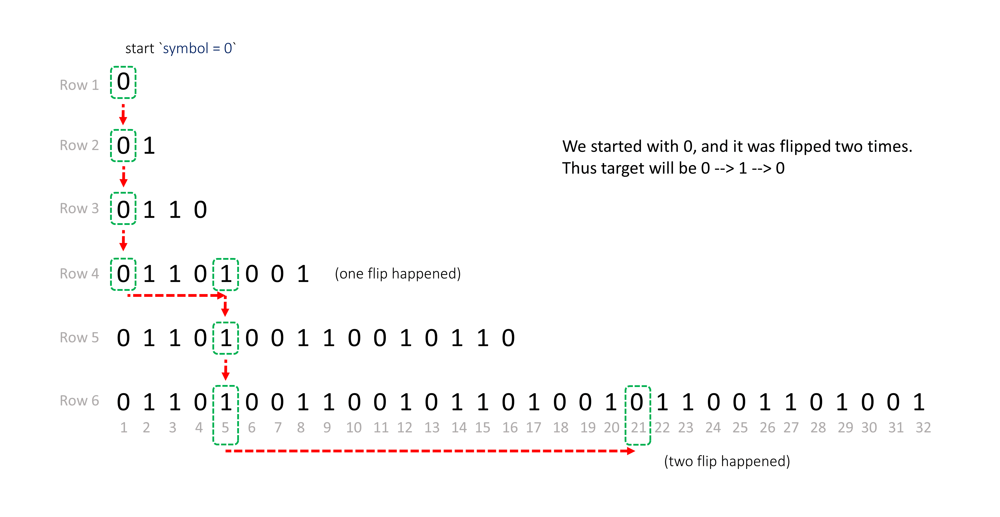
The most challenging aspect is determining the number of flips required.
From the previous approach, we know that whenever the current kkk
is more than half of the total number of symbols of the current row then we flip it, and subtract the first
half symbols count from kkk.
A flip happens at each subtraction, thus the number of flips is equal to the number of subtractions performed.
Each row will have some 2a2^a2a
elements, it means half of it will be 2b2^b2b.
Thus, at each step, we subtract 2b2^b2b
from k until k becomes 1.
We can say that,
k−2b−2c−2d−2e−....=1k - 2^b - 2^c - 2^d - 2^e - .... = 1k−2b−2c−2d−2e−....=1
(k−1)=2b+2c+2d+2e+.... (k - 1) = 2^b + 2^c + 2^d + 2^e + .... \space \space(k−1)=2b+2c+2d+2e+.... (remember this
expression)
Therefore, we can conclude that the number of flips is equal to the number of terms RHS of the previous
expression has.
Now, we all know that every decimal number ddd can be expressed as,
d=(A⋅20)+(B⋅21)+(C⋅22)+(D⋅23)+(E⋅24)+(F⋅25)+....d = (A \cdot 2^0) + (B \cdot 2^1) + (C \cdot 2^2) + (D \cdot 2^3) + (E \cdot 2^4) + (F \cdot 2^5) + ....d=(A⋅20)+(B⋅21)+(C⋅22)+(D⋅23)+(E⋅24)+(F⋅25)+....
where, A,B,C,D,E,F,....∈(0,1)A, B, C, D, E, F, .... \in (0, 1)A,B,C,D,E,F,....∈(0,1)
and, the binary representation of ddd is, (d)2= ...FEDCBA(d)_2 = \space ...FEDCBA(d)2= ...FEDCBA
For example: (25)2=11001(25)_2 = 11001(25)2=11001,
and
25=20+23+2425 = 2^0 + 2^3 + 2^425=20+23+24
25=1.20+0.21+0.22+1.23+1.2425 = 1.2^0 + 0.2^1 + 0.2^2 + 1.2^3 + 1.2^425=1.20+0.21+0.22+1.23+1.24
(k−1)(k - 1)(k−1) can also be expressed as (A⋅20)+(B⋅21)+(C⋅22)+(D⋅23)+(E⋅24)+(F⋅25)+....(A \cdot 2^0) + (B \cdot 2^1) + (C \cdot 2^2) + (D \cdot 2^3) + (E \cdot 2^4) + (F \cdot 2^5) + ....(A⋅20)+(B⋅21)+(C⋅22)+(D⋅23)+(E⋅24)+(F⋅25)+....
We just need to find which all coefficients A,B,C,D,E,F,....A, B, C, D, E, F, ....A,B,C,D,E,F,.... will be 111
to convert it to 2b+2c+2d+2e+....2^b + 2^c + 2^d + 2^e + ....2b+2c+2d+2e+.....
Thus, the number of flips required will be the number of 1s1s1s
present in the binary representation of the number (k−1)(k - 1)(k−1).
Finally, we just need to determine the number of 1 bits count in the binary
representation of (k−1)(k - 1)(k−1). The symbol at the
position kthk^{th}kth
in nthn^{th}nth
row will be 000 flipped count times.
If count is even then 0 will remain 0, otherwise 0 will
change to 1.
Algorithm
- Find the
count of the number of 1 bits in k - 1.
- Return
0 if count is even, 1 otherwise.
Implementation
Java
class Solution {
public int kthGrammar(int n, int k) {
int count = Integer.bitCount(k - 1);
return count % 2 == 0 ? 0 : 1;
}
}
C++
class Solution {
public:
int kthGrammar(int n, int k) {
int count = __builtin_popcount(k - 1);
return count % 2 == 0 ? 0 : 1;
}
};
Python3
class Solution:
def kthGrammar(self, n: int, k: int) -> int:
count = bin(k - 1).count('1')
return 0 if count % 2 == 0 else 1
Complexity Analysis